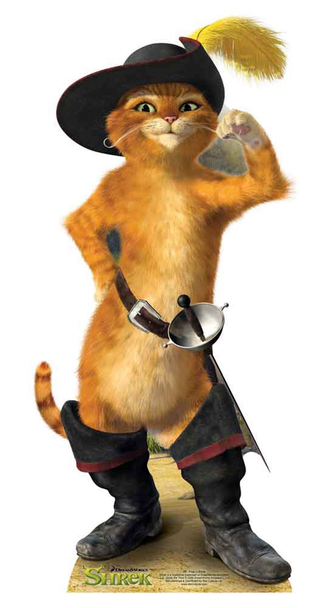

Le Chat Botté
Présentation du chat botté :
Dans l'univers de Shrek, le Chat Potté est un personnage incontournable, drôle et charismatique. Le Chat Potté apparaît pour la première fois dans Shrek 2. Le Chat Potté est un mélange parfait entre un guerrier redoutable et un chat adorable. Il est courageux, loyal, mais aussi un peu vaniteux. Malgré ses talents de combattant, il se laisse souvent distraire par des instincts de chat, comme poursuivre une lumière ou jouer avec des objets brillants. Avec son charisme, son humour et ses aventures épiques, il est devenu l’un des personnages les plus aimés de la franchise.
Les Films Shrek
Dans Shrek 2 le Chat Potté devient un membre indispensable de l'équipe. Il aide Shrek à récupérer Fiona en infiltrant le château, tout en montrant son courage et son habileté.
Dans Shrek 3 il est toujours loyal, il accompagne Shrek dans sa quête pour trouver Arthur, l’héritier du trône, et se montre à la fois héroïque et drôle.
Dans Shrek 4 dans cette version alternative, le Chat Potté est présenté comme un chat obèse et paresseux, ayant perdu son esprit de combattant. Malgré cela, il reste attachant et joue un rôle important pour rétablir l’ordre.
Film solo
Le succès du personnage dans les films Shrek a conduit à son propre spin-off, "Le Chat Potté", où on explore ses origines en tant que hors-la-loi, sa relation avec Kitty Pattes de Velours, et sa quête pour retrouver sa réputation.